NBA Player Rating Systems: Survey, Comparison, and Combination
2024–25 season testbed
Draft
Among the ratings that never use who won, the one that best describes a finished NBA season is one of the worst at predicting the next. In a typical season (the middle of the 30 tested), PER, the oldest and simplest box score, rebuilds about 68% of the gaps between teams in a season just played, more than any other rating that never looks at team results, yet it forecasts the next at only about 10%. That split is one thread of a larger problem: every “top players” list uses a different method, and they disagree in ways that matter for players on losing teams, defensive specialists, and high-usage scorers.
This report surveys how NBA players get rated and puts three questions to the systems:
- Do the systems agree?
- What does each system uniquely capture?
- How should they be combined into one rating?
A few things to settle up front:
- Is there a single best system? No: the one that best sums up a finished season (PER) is among the weakest at forecasting the next, so “best” depends on the question you are asking.
- Do the systems agree? At the very top, closely; below the top tier they diverge enough to change who you would pick.
- Is a higher rank a proportionally bigger gap? No: value is top-heavy, so the gap from the best player to the tenth is far larger than from the tenth to the fiftieth.
The short answers run through the report. The box-score systems move together but only loosely track the from-scratch RAPM, the one lineup-based impact metric computed here, agreeing with the box scores at about 0.37 on a 0-to-1 scale. Each system tilts toward a player type, and the all-in-one summaries (PER, Game Score, BPM, VORP) turn out largely redundant, nearly rebuilt from the others, while Win Shares per minute and the from-scratch lineup metric carry the most of their own. And two combined ratings, a plain consensus and a wins-predictive blend, agree almost exactly (0.98 on a 0-to-1 scale) on the best players while parting on role players whose production did not turn into team wins. One more thread runs through it: whether a player’s rating holds up when the games matter most, the Jalen Brunson question the report started from (Section 8).
The testbed is the 2025-26 season, built on the eight box-score systems that can be recomputed directly from public data: Game Score, PER, Win Shares, WS/48, BPM, Offensive BPM, Defensive BPM, and VORP. It also includes a lineup-based impact metric computed from scratch for this report, RAPM, in two forms: a bare single-season version, the noisier of the two, and a prior-informed, multi-year version (RAPM+prior) built the way the published metrics are. Two findings reach beyond the single season, across 30 seasons back to 1996-97 (29 season-to-season pairs for the forecast test): the describe-versus-forecast test above and each rating’s year-to-year stability. Because the cross-system comparison rests on one season while those panels span decades, treat the single-season orderings as a snapshot and the panel findings as the firmer, repeated pattern. The other impact metrics and the human rankings are surveyed as part of the landscape (Section 1) but are not recomputed or included in the comparison here.
1. The landscape of player rating
Box-score systems
The oldest and most available systems work entirely from the standard box score: points, rebounds, assists, steals, blocks, turnovers, and shot attempts. They can be computed for any season back to the 1980s.
Player Efficiency Rating (PER) was John Hollinger’s attempt to fold everything into one per-minute number normalized so the league average is always 15. A 20 PER is well above average; 30 or above is an all-time great season.
Win Shares (WS) takes a different angle. Rather than measuring efficiency per minute, it allocates the team’s actual wins back to individual players based on their offensive production and a defensive credit. The cumulative version (total Win Shares) grows with playing time; WS/48 normalizes it back to a per-minute rate.
Box Plus/Minus (BPM) tries to estimate what a player’s presence adds per 100 possessions compared to an average player, derived from box-score rates and adjusted for team quality. It splits into Offensive BPM and Defensive BPM. VORP extends it into a cumulative value by multiplying by playing time and comparing to a replacement-level player rather than an average one. BPM exists in two versions; this report uses the current one, BPM 2.0 (see Appendix B).
Game Score (also Hollinger) is a simpler per-game summary that weights each box-score category by its approximate value. It is not normalized.
Impact metrics
Box-score systems share a blind spot: they do not directly measure whether a player made their team better or worse. A prolific scorer who forces bad shots and plays poor defense can rate well on PER and WS. Lineup-based “impact” metrics try to fix this by measuring how the team’s scoring margin changes when a player is on the floor versus off it, with various forms of smoothing to handle the noise.
All of the major impact metrics share the same technical backbone: Regularized Adjusted Plus/Minus (RAPM). The basic idea is to ignore individual stats entirely and look only at the scoreboard. Every time a lineup is on the floor, track whether the team outscores or gets outscored. Do that for every lineup combination across an entire season, then use a statistical model to work backward and assign each player their share of credit or blame, adjusting for the quality of teammates and opponents. The result is a per-possession estimate of how much the scoring margin changes when a player is on the floor versus an average player.
RAPM is considered the best available signal for true player impact for three reasons. First, it measures the right thing: winning is about outscoring the opponent, and RAPM captures everything that contributes to that (off-ball movement, defensive positioning, communication), not just what shows up in the box score. A player who creates open shots for teammates without recording the assist, or whose defensive presence deters drives two passes away from the ball, shows up in RAPM but not in PER or Win Shares. Second, it passes predictive tests better than box-score metrics: in studies comparing how well first-half stats predict second-half game outcomes, RAPM-based metrics consistently outperform box-score-only approaches. Third, it does not assume what matters. Box-score metrics assign fixed weights to assists, steals, rebounds, and so on based on historical averages. RAPM does not; it lets actual game outcomes determine each player’s value.
The catch is noise. One season of lineup data is not enough to reliably separate a player’s true impact from the randomness of which lineups they happened to share court time with. Raw RAPM estimates for bench players or players in unusual lineup situations can swing wildly. Every serious system handles this by adding a “prior”: a box-score estimate of what a player should be worth, used to pull noisy RAPM estimates toward something stable. The systems mostly differ in how that prior is built and what data feeds it.
RAPTOR (FiveThirtyEight, 2013-14 through 2022-23) combined on/off lineup data with player-tracking data (speed, distance, shot quality). FiveThirtyEight shut down its sports coverage in April 2023, so RAPTOR has no 2025-26 values. Historical data is downloadable from their GitHub.
EPM (dunksandthrees) uses a RAPM calculation with a prior built from a highly optimized Statistical Plus/Minus model that incorporates player-tracking data. EPM is the only public metric that directly optimizes the weighting of each underlying stat by how quickly it stabilizes, which is one reason it tends to perform well in retrodiction tests (checking each rating against games it has not yet seen).
LEBRON (BBall-Index) also uses a luck-adjusted RAPM with a box-score prior. “Luck adjustment” means the on/off data strips out the swing from whether shots happened to fall, rather than crediting the player for it. The prior’s starting values come from PIPM (Player Impact Plus/Minus), an earlier metric by Jacob Goldstein that is no longer updated.
DARKO DPM is best thought of as a projection system rather than a season average. Like baseball projection systems (PECOTA, Steamer), DARKO weights recent games more heavily and updates daily, so it answers “what is this player’s current true talent?” more than “how did this player perform this season?” That distinction matters when comparing across systems.
DRIP (Daily Updated Rating of Individual Performance, Opta Analyst) is similar to DARKO in structure: it now-casts current player talent by weighting recent performance more heavily, rather than averaging over the full season.
ESPN RPM used RAPM with a box-score prior from Jeremias Engelmann, who also created the foundational RAPM dataset that most other systems calibrate against. ESPN stopped publishing RPM publicly around 2023.
The core limitation across all these systems is sample size: a player’s on/off data in one season is much noisier than their box-score totals. That smoothing pulls noisy estimates toward the box-score baseline, which means the baseline’s assumptions matter a great deal, especially for players with limited minutes.
The prior-plus-RAPM structure is a way of weighing a noisy measurement against a steadier starting estimate. The box-score prior is a starting belief about a player’s value before seeing the lineup data. The on/off data is the evidence that updates that belief. The final estimate blends the two, with the weight on the data side growing as the sample of lineup possessions grows. A player with 3,000 possessions of lineup data gets pulled strongly toward what the data shows; a bench player with 400 possessions barely moves from the prior. This is why the best-performing metrics in retrodiction tests outperform simpler ones: the improvement comes not from more variables in the box-score formula, but from more carefully balancing how much to trust the prior versus the data.
The one thing this framework does not yet deliver is uncertainty. Every metric publishes a single number (“EPM: +8.2 per 100”), with no range around it. Carrying the uncertainty through would produce something like “+8.2, likely between +6.8 and +9.6, with the range reflecting how much one season of lineup data can vary by chance.” That range would make visible what is currently hidden: the apparent disagreements between systems about who ranks 8th versus 12th are often smaller than the uncertainty band of any single metric. The rankings are noisier than they look.
Which metrics do practitioners trust? A HoopsHype survey of 29 NBA front-office executives (2021) found DARKO DPM was the most preferred catch-all metric (8 respondents), followed by EPM and LEBRON. A retrodiction study by Dunks & Threes, comparing how well each metric predicts future game outcomes, put EPM first, followed by RPM, RAPTOR, and BPM 2.0 in that order. EPM and RPM were the only two metrics using RAPM directly with a box-score prior at the time of that study, which appears to be the structural feature behind their edge over box-score-only approaches. (Both the survey and the retrodiction study are external published work, not recomputed here; full citations are in the resources bibliography.)
Human rankings
MVP vote share, All-NBA selections, and media top-100 lists measure something neither box nor impact models capture directly: reputation and narrative. A player with a great story can receive more MVP votes than their on-court numbers warrant; a player on a losing team can be underrated.
Human rankings sit outside this report’s current testbed: the pipeline was narrowed to systems that can be recomputed directly from box-score data. They are described here because they are part of how players actually get rated, and adding a reputation dataset to compare model-based and reputation-based consensus is a natural extension.
2. Do the systems agree?
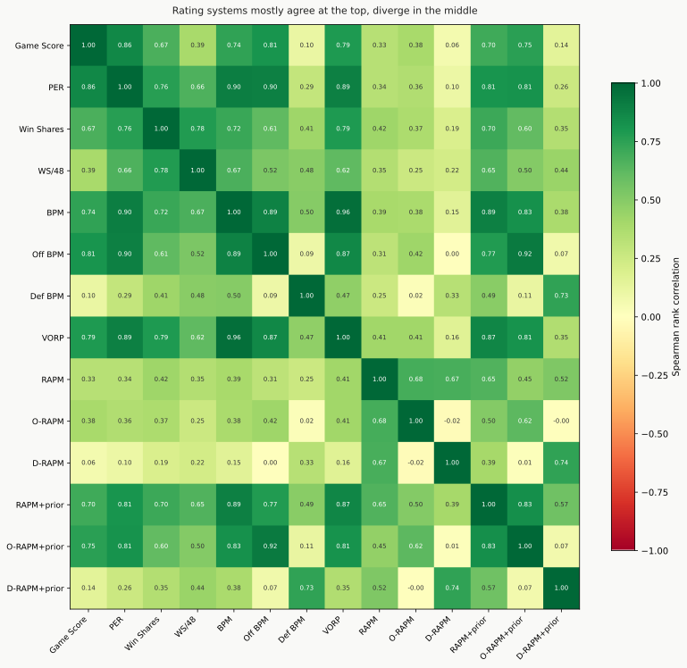
The box-score systems mostly move in the same direction, but how tightly varies a lot by pair. PER and Game Score track closely (0.86 on a 0-to-1 scale, among qualified 2025-26 players). PER and Win Shares agree fairly well too (0.76), as do Win Shares and WS/48 (0.78). Even across families some pairs stay close: PER and BPM track at 0.90, nearly as tight as the box-score pairs above. The loosest pairing shown here is Game Score and BPM, at 0.74. The tightest pair is BPM and VORP (0.96), which is no surprise, since VORP is built directly from BPM.
Even the pairs that agree overall still hand out value differently player by player. Win Shares, which divides a team’s actual wins among its players, favors efficient bigs on good teams: Amen Thompson and Rudy Gobert both rate well above their consensus rank in it. PER, a per-minute efficiency score, leans toward high-usage scorers, with Giannis Antetokounmpo and Lauri Markkanen among its biggest risers. Two systems can land near each other in the overall order while still disagreeing about which individual players to credit.
RAPM, the one impact metric computed here, sits apart from all of them. It is built only from which lineups outscored their opponents, with no box-score inputs at all, so it shares little with the rest: its rank order agrees with the box-score systems at about 0.37 on the same 0-to-1 scale, well below how tightly those systems track each other. That low agreement is now genuine independent signal, the thing an impact metric exists to catch, not noise. It used to be noise, for a dull reason: a bug in the step that turns play-by-play into lineups was quietly throwing out most of the season’s games, one mistracked substitution enough to void an entire game, and the sliver of RAPM that survived was close to random. With that reconstruction fixed and most of the games restored, RAPM steadied. Fit it on two random halves of the possessions and the halves now agree at about 0.39 on a 0-to-1 scale, up from the noise floor it sat at while the bug was live, and a single season of bare RAPM now carries from one year to the next at about 0.40, where before it barely held at all.
The bare version is still the noisier of the two. Its 2025-26 leader is Chet Holmgren, a genuine rim protector rather than a reserve, but bare RAPM puts him first while the box-score consensus has him down at number 20. That is why the prior-informed RAPM+prior, not the bare version, feeds the consensus, the same move every published impact metric (EPM, LEBRON, DARKO) makes when it anchors its RAPM to a box-score prior.
RAPM+prior pools three seasons of lineup data and anchors each player to a box-score prior (their BPM), the same recipe the published metrics use. It now tops out at the MVP tier: Shai Gilgeous-Alexander, Nikola Jokić, and Giannis Antetokounmpo lead it. Its order tracks the consensus at about 0.91, up from 0.46 for the bare version (agreement with the consensus rating, a separate measure from the box-score agreement above), and it holds from one season to the next about as firmly as BPM (0.84 against 0.79 on the 0-to-1 scale). A rating that repeats as reliably as BPM but is built from lineup results rather than the box score is adding real impact signal on top of it, not just restating it. How it is built is in Section 12; whether it forecasts team results any better is tested in Section 3.
The exact figures are in docs/player_rating_overview_results.md.
3. What the field has learned about evaluating these metrics
Which of these systems should you trust? The field has two main tests for that, and this report ran both: the answer splits, because describing a finished season and forecasting the next turn out to be different jobs.
Retrodiction uses the first half of a season’s games to predict game outcomes in the second half. A metric that genuinely captures player impact should let you predict which team wins when you know each team’s lineup. This is the test used in the Dunks & Threes comparison study, which found EPM and RPM at the top, followed by RAPTOR and BPM 2.0. The top metrics shared a structural feature the others lacked: both used RAPM with a box-score prior, while lower-ranked metrics either skipped the prior or used only box-score data without the RAPM step.
Team wins prediction aggregates player ratings to the team level and asks how well the total predicts actual wins. This is the logic behind the wins-predictive rating built in this report.
Both tests reward the same thing: a RAPM backbone stabilized by a well-calibrated box-score prior. That combination handles the two main failure modes: pure box-score metrics miss what a player does off the ball, and pure RAPM is too noisy with one season of data.
One important result from the academic literature runs against the intuition that more sophisticated is better: peer-reviewed research has found that complex metrics do not reliably outperform simpler ones when used to predict salaries or wins. That is not a flaw in the metrics themselves. They are built to estimate player impact per possession, not to serve as inputs in every downstream analysis. The lesson is that a metric’s predictive accuracy in a retrodiction test is not the same as its usefulness for a specific application, and the right tool depends on the question being asked.
A direct test on the systems here
A related test grades the systems one at a time rather than combining them. Add up a single system’s player ratings across a team’s roster, weighted by minutes played, and check how closely that total matches which teams actually outscored their opponents over 2025-26. Each system is graded on teams held out of the calculation, so it cannot score well just by fitting this exact season.
Read it the honest way, by separating the metrics built from team results from those that never saw them. BPM and VORP are anchored to each team’s point differential by design, so adding them back up to the team rebuilds that differential almost perfectly (BPM reaches essentially 100%, VORP nearly as high). That is mechanical, not a mark of quality, so the real question is which rating that never used who won comes closest. There a useful surprise holds up: PER, the oldest and simplest per-minute box score, rebuilds about 73% of the differences between teams, ahead of every other outcome-blind rating. One caution before reading that as a verdict: rebuilding the season just played is only half the test.
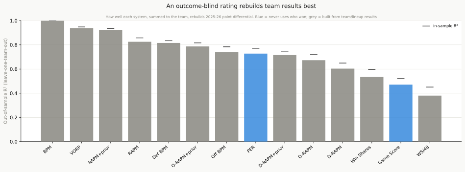
The other half is forecasting. Take each player’s rating from the prior season (2024-25), spread it across this season’s rosters, and see how well that predicts which teams outscored their opponents in 2025-26. This is a stricter test: a metric’s team adjustment is tuned to its own season, so it earns nothing for predicting a season it has not seen. The order flips. PER, the best description of the season, becomes one of the weakest forecasts of the next, falling from about 73% to roughly 22%. In this one pair the lineup metric holds up best, with RAPM+prior on top at about 55%, ahead of every box score. (About 88% of this season’s minutes came from players who also rated the year before; rookies have no prior mark.)
The lesson is the one every projection system runs into: describing what happened and forecasting what comes next are different jobs. PER is a faithful scoreboard of a finished season but a poor crystal ball. Which rating is “better” depends on the question.
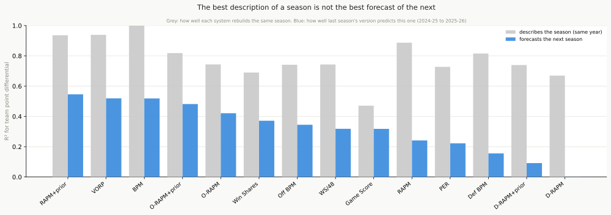
One pair of seasons could be a fluke, so we ran the same two tests on every season back to 1996-97: 30 seasons for the describe test and 29 year-to-year handoffs for the forecast test. The shape repeats. Among the ratings that never use who won, PER describes best every era, rebuilding about 68% of the gaps between teams in a typical season, and forecasts near the bottom: about 10% in a typical handoff, and in a couple of handoffs its forecast collapses entirely. The team-anchored box metrics, BPM and VORP, sit above it on the describe test, but mechanically: they are built to reproduce team point differential, so rebuilding it is no test of them. The best forecaster among these box scores across all those handoffs is VORP, at about 45%, a box-built rating that carries more of its signal from one season to the next than PER does. The single 2025-26 handoff agrees: VORP is the best-forecasting box score there too, and across the full panel BPM still beats PER as a forecaster in 28 of the 29 handoffs. What holds across every era is the gap itself: PER, the best honest description of a finished season, is consistently among the worst bets on the next one.
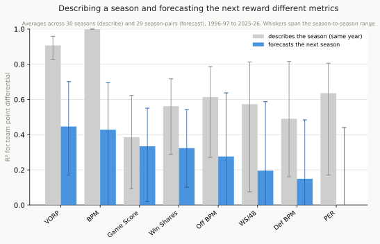
The impact panel spans the 29 seasons from 1997-98 where both RAPM versions can be computed (play-by-play reaches 1996-97, and RAPM+prior needs the season before it), so a fair test scores RAPM against the box scores on those seasons rather than against their full 30-year history. On that even footing the bare single-season RAPM is a middling forecaster of next-season team results (7 of 10, rebuilding about 26% of the gaps between teams): no longer the near-random metric the reconstruction bug produced, but still the weaker of the two RAPM versions. Its same-season describe score is much higher, about 82%, which fits how it is built: RAPM comes from the very lineup margins the describe test rebuilds.
RAPM+prior is the standout on this panel: it forecasts next-season team point differential better than any box score (1 of 10, at about 46%). Pooling three seasons and leaning on a box-score prior does more than sharpen which players rate highly (Section 12); on the seasons where the lineup data exists, it edges past the box-built BPM and VORP that top the wider panel. That is the payoff of the fix: with the games restored and the prior in place, the lineup signal now forecasts team results better than the box score does, not worse.
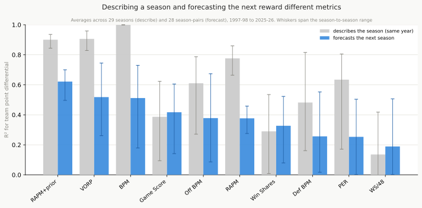
Which ratings hold steady year to year
There is a third way to judge a rating: how much a player’s own number carries from one season to the next. Match the players who logged real minutes in back-to-back seasons, and ask how many of the top 20 by each system one year are still in the top 20 the next. The simplest box scores are the stickiest. Game Score keeps 68% of its top 20 from one year to the next, and PER keeps 64%, against a chance level near 5%. On a 0-to-1 stickiness scale, where 1 would mean a player’s rating repeats exactly, Game Score is the steadiest at 0.85 and DBPM the jumpiest at 0.67, pooled over 29 season-to-season handoffs.
Stickiness is not the same as quality. A rating can repeat year to year because it captures a real, lasting skill or because it is slow to notice a player changing. What stands out is how this lens cuts against the forecasting one. PER is among the stickiest individual ratings yet one of the weakest forecasters of team results; the plus/minus metrics are jumpier yet forecast team point differential better than PER does. The plain reading is that the box-score rate metrics measure a stable individual trait, the scoring and production a player carries with them, while the plus/minus metrics move around more because they fold in team and role, the very context that helps them forecast a team. Only Game Score sits near the top of both lists: steadiest year to year (0.85) and still one of the better forecasters, at about 33% of next season’s team gaps rebuilt.
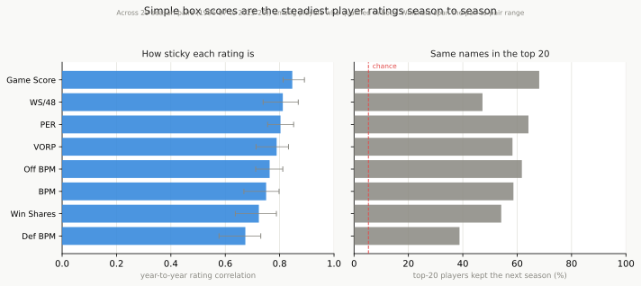
4. What each system uniquely sees
Not all systems add independent information, and they split widely on how much. The all-in-one summaries are the most redundant: about 95% of PER, 89% of Game Score, and roughly 94% of BPM and 89% of VORP can be rebuilt from the other systems, so each mostly repeats what the field already says. The metrics that carry the most of their own are Win Shares per minute (only about 66% of it can be rebuilt from the rest) and the lineup-impact metrics: bare RAPM sits near that independent end too, about 71% rebuildable, and its offensive half alone, O-RAPM, is the single most independent metric in the whole comparison, at about 61% (it is a bare-RAPM split, not part of the consensus). That the raw impact metric now lands among the most independent is the payoff of the reconstruction fix (Section 2): with RAPM carrying real lineup signal instead of noise, it catches what the box scores miss, which is the whole point of an impact metric. Defensive BPM, which used to look the most independent here, has slid toward the middle (about 77% rebuildable), consistent with the fixed RAPM now accounting for much of the defensive impact it was previously alone in catching. BPM and VORP carry no such caveat (they are validated against Basketball-Reference, a value agreement of 0.93 on a 0-to-1 scale), and they sit with the redundant systems, not the independent ones: a validated rating can still be redundant if it says what the others already do. The measure holds each metric’s own components out of the comparison, so BPM is never counted as “explained” by its own offensive and defensive halves (see results for the full breakdown).
The “system outliers” chart shows the players each system rates most above and below the consensus. This is where methodological differences become visible: a system that captures defensive value heavily will love rim protectors; a system that penalizes inefficient volume scoring will discount high-usage players with middling true shooting.
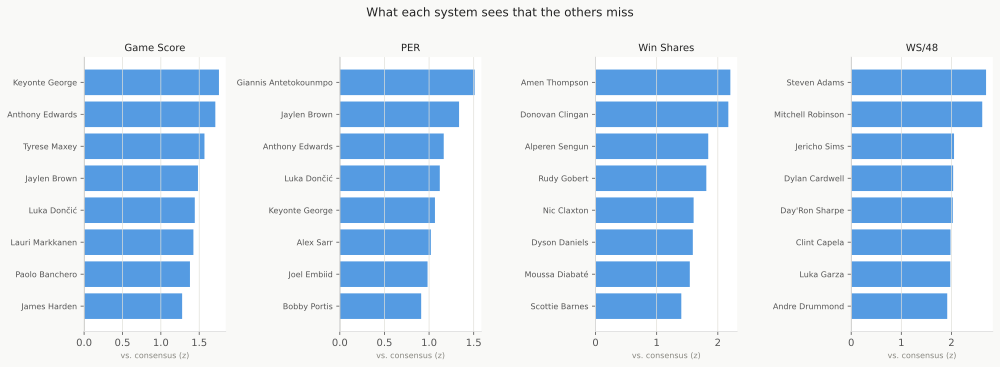
Five players make the divergence concrete. The fastest way to feel what each system catches is to watch where a handful of players land.
Start with the one everyone agrees on. Nikola Jokić ranks first in nearly every system at once: his worst finish across the five box scores is 1, and even the impact metrics put him within a hair of the top. That is the rare player box scores, impact metrics, and human voters all point at together, and he is the ceiling against which every disagreement below gets measured.
Now the defense-first star. Victor Wembanyama grades out at an all-around BPM of +8.9, and most of it is defense: +3.9 of that number comes from his defensive rating alone, the kind of value a pure scoring metric never records. The lineup metric agrees and then some: RAPM ranks his net on-court impact number 5, above his box-score offense at number 9, catching two-way value the box only partly sees.
Now the high-volume scorer the systems split on. Counting stats love Pascal Siakam, with Player Efficiency Rating placing him 45th. The impact-aware metrics are cooler: BPM has him down at 126th, because heavy scoring counts for less once efficiency and team results enter the picture. The lineup data breaks the tie toward the counting stats, though: RAPM puts him back up at 29th, so what his lineups do on the floor backs his volume more than his efficiency alone would.
Then Jalen Brunson, the player the playoffs make interesting (Section 8). His offense rates with the best, an offensive BPM of +4.3 that ranks 12th. His defense pulls the other way, a defensive BPM of -0.9, so his all-around BPM of +3.4 sits at 29th. The same player is a top-fifteen offensive player and a top-thirty contributor overall, and the gap between those two is exactly what his defense costs him. The impact metrics, now that they are fixed and trustworthy, tell the same story rather than a kinder one: the corrected RAPM puts his net on-court impact at merely average (221st), and RAPM+prior at 68th, so two independent methods, box and lineup, agree that his scoring outruns what his team actually does with him on the floor. That is a sturdier verdict than either method alone: the earlier, broken RAPM had buried him near the bottom, which was noise, and the corrected read lands him where the box score already suggested, good but not a hidden star.
And one player who answers a different question, OG Anunoby: he looks ordinary here but is the biggest riser once the playoffs start, which is exactly where Section 8 picks up.
5. The two uber ratings
Combine the systems two ways, a plain average or a weighting by how well each predicts team wins, and the two rankings land almost on top of each other at the top (0.98 on a 0-to-1 scale).
Each system uses a different scale (PER is centered around 15, BPM around 0, Win Shares in the single digits), so you cannot average them directly. Putting every system on one common scale fixes that, by asking of each player: how many typical-player gaps above or below average is this? A 0 means exactly average; +2 is well into star territory; −1 is a step below average. Once every system is on this common scale, they can be combined.
Consensus rating: the average normalized score across all systems. This measures what the crowd of methodologies agrees on, not what is best-supported by any one theory. The 2025-26 consensus top five: Nikola Jokić, Shai Gilgeous-Alexander, Victor Wembanyama, Giannis Antetokounmpo, and Luka Dončić.
Wins-predictive rating: a combination of those scores weighted by how well each system (aggregated to team level) predicts actual team wins. The two reach the same conclusions about the very best players; where they part is further down the list. The wins-predictive rating pushes the stars on winning teams higher still. Giannis Antetokounmpo rises the most, with Shai Gilgeous-Alexander close behind, and Kawhi Leonard, Luka Dončić, and Victor Wembanyama also move up. Players on losing teams slide the other way: Jericho Sims and other deep-rotation players on poor teams rate lower on the wins-predictive scale than on the consensus, because their on-court production did not translate into team wins.
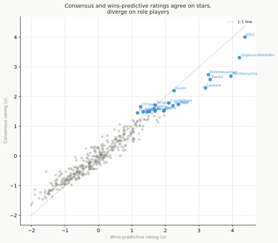
Aggregating across systems is not unique to this report. HoopsHype publishes periodic “Analytics MVP” posts that combine EPM, LEBRON, DARKO, RAPTOR, and BPM into a single ranking, typically using a simple equal-weighted average. ESPN’s #NBArank is a different kind of aggregate: journalists vote rather than models, making it closer to the human-reputation category than to a model combination. Some metrics do the aggregation internally: LEBRON, for example, blends a box-score prior with luck-adjusted on/off data as part of its own formula rather than publishing both separately and combining them downstream. What distinguishes the wins-predictive rating here is that how much each system counts is estimated from data (how well each system actually predicted team wins) rather than assigned by hand. The practical difference is small (the two ratings agree at 0.98 on a 0-to-1 scale), but it tells you which systems carried the most predictive signal for 2025-26.
The 2025-26 season shows how this plays out. Nikola Jokić tops both ratings and pulls further ahead under the wins-predictive weighting: the consensus puts him at 3.98, the wins-predictive rating at 4.57, because Denver was one of the league’s stronger teams and that rating rewards strong production that lines up with team success. The single biggest gainer, though, is Giannis Antetokounmpo, who moves up +0.96 versus his consensus rating. The deep-rotation players on losing teams move the opposite way: solid rate metrics, but no team wins behind them.
6. Stars matter more than rank implies
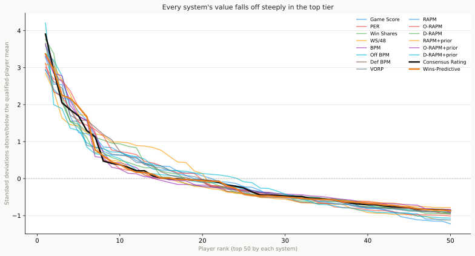
PER spreads relatively evenly among qualified 2025-26 players: the top 5% account for only 8.6% of total value. The gap between a middle-of-the-pack player and one in the top 5% in PER is smaller than it looks on a ranked list.
Win Shares and VORP tell a different story. The top 5% of players hold 13.5% of total Win Shares, and VORP concentrates far more steeply still: its top 5% hold 24.5% of all positive value. Both lean toward the top because they multiply a rate by minutes played, and the best players lead in both.
These drop-offs are sometimes called power laws. The term has a precise meaning: value falls by a roughly constant percentage with each step down the ranks, so the drop from rank 1 to rank 2 is proportionally the same as from rank 10 to rank 20. When that holds there is no natural place to split “stars” from everyone else; the order just keeps shrinking at the same rate. The test is simple. Stretch both axes onto a log scale, and a power law turns into a straight line.
By that test the systems fall into two groups, and the split lines up with the cumulative-versus-rate divide already described. Holding close to a straight line: Game Score, PER, Win Shares, BPM, OBPM, DBPM, VORP, RAPM, O-RAPM, D-RAPM, RAPM+prior, O-RAPM+prior. Bending instead: WS/48, D-RAPM+prior.
Win Shares and VORP concentrate the most value of any system, with their top 5% holding the largest shares. Because they multiply a rate by minutes, value compounds: the best players lead in both, so their totals pull far ahead and the top stays heavy all the way down. PER and Game Score are power laws too, but so shallow that the line is nearly flat, which is the same reason their top 50 sit bunched close together in value.
What bends are the per-possession rate metrics. They score how far above average a player is per possession against the lineup he shares the floor with, a quantity that is roughly even on both sides of the middle and has a natural size to it, so their best player is not a runaway: the top of the curve sits below where a straight power law would put it.
The impact metrics are the subtler case: several of them clear the straight-line test above, but that test reads only the top 50 players, and their full distributions say otherwise. RAPM, the impact metric built for this report, is the clearest example, and it answers a natural question: no, RAPM is not a power law, and its whole distribution settles it. Pooled across all 29 seasons with play-by-play (9820 player-seasons, enough to read the shape cleanly), it is a symmetric hump centered on zero, about as many players below average as above (47% sit below zero), and it tracks a plain bell curve closely. A power law needs a long one-sided tail of standout values. RAPM has none, because a per-possession impact is scored against the average player and runs about as far into the minus as the plus. VORP, set beside it, leans to the right: a handful of stars trail a long tail above the pack. That lean toward the top, not a hump centered on zero, is the precondition a power law needs, the one RAPM lacks entirely and VORP has.
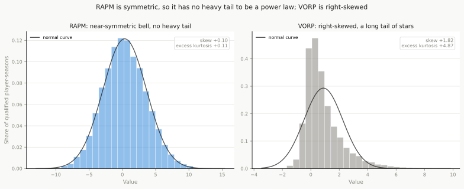
So the shape tells you what the metric measures. A metric that piles up accumulated value tilts toward a few players at the top; a metric that scores distance from average has a built-in size and does not run away. The small panels below make the difference visible: the blue curves hold a straight line, the grey ones bow.
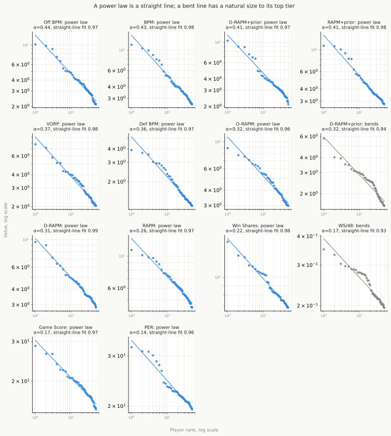
Two cautions. The cutoff between “power law” and “bends” is a convention, and the systems sitting right at it (PER clears the line, Win Shares per-48 just misses) are really the same shape. And this is a description of 50 players in one season, not a formal test: it shows which curves are straight and which bend, not a proven law. The reliable read is the two groups and their order, not the label on any single borderline system.
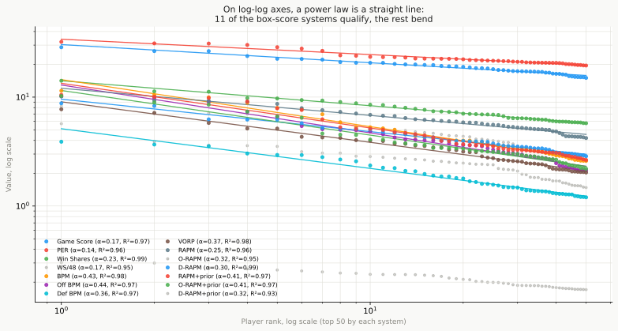
An older, more familiar way to put a single number on concentration is the Gini coefficient (0 means everyone is rated the same, 1 means one player holds all the value). It is kept here only as a cross-check, because it has a real limit: it works for metrics that pile up a quantity that cannot drop below zero, like Win Shares or VORP, but not for the 0-centered metrics. On those (the BPM family and the two combined ratings) it counts every below-average player as a zero and inflates the score, which is why Consensus shows a Gini of 0.753, above Win Shares at 0.353, an ordering that is not real. The steepness read above is the one to trust. By it the combined ratings sit in the upper-middle of the pack: Consensus at 0.38 and Wins-Predictive at 0.42, steeper than PER at 0.14 and a touch steeper than VORP at 0.37.
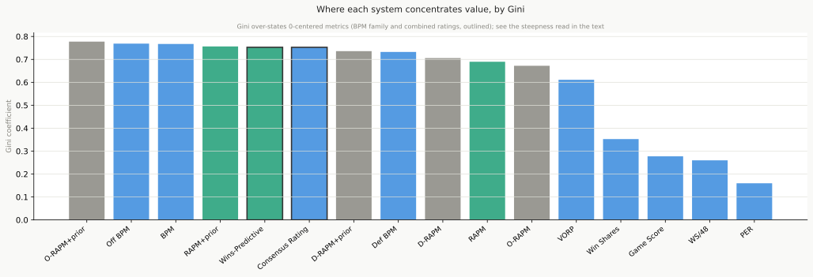
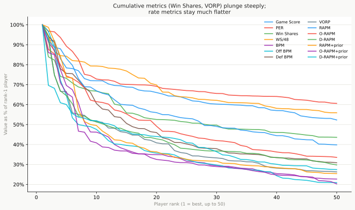
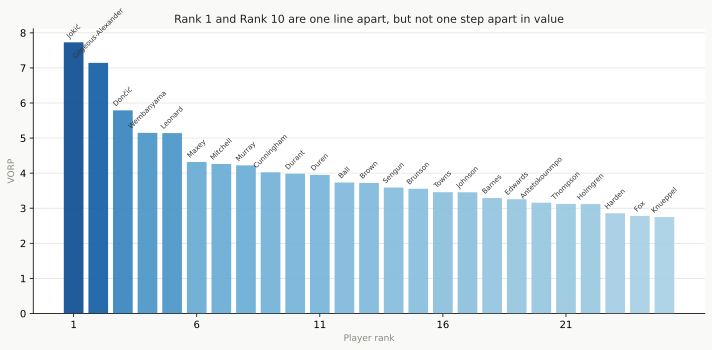
The visual gap between rank 1 and rank 10 looks like 10 spots on a list. The numerical gap is often several times larger than the gap between rank 10 and rank 50.
The data is consistent with the explanation that elite talent is worth more than rank implies: having the best player on the roster matters more to winning than being one step ahead of the second-best, and a ranked list treats every step between players as equal.
7. Who lands in the top 20
The raw top 20 makes Section 6’s split concrete: under VORP, whose top 5% already claims 24.5% of all value, the rank-1 player sits far above rank 20; under PER, whose top 5% claims only 8.6%, the twenty bunch close together instead. The gap between rank 1 and rank 20 is the most direct read on how concentrated value is: a large gap means the top player is in a different tier from the rest, a small gap means the list is relatively flat.
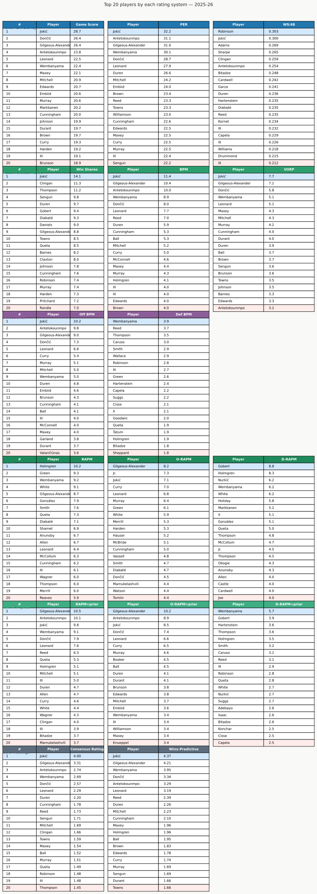
8. Who rose and fell in the playoffs
Recompute the box-score rate metrics on playoff games only, and a direct before-and-after read falls out: who climbed once the postseason started, and who sank. The biggest risers were OG Anunoby, Cason Wallace, and Jayson Tatum. The biggest fallers were Jalen Duren, Nikola Jokić, and Nickeil Alexander-Walker. The drop reached even the regular-season consensus number one, Nikola Jokić, whose box-score rates slipped as Denver lost in the first round.
This read works only for the box-score systems, which we recompute ourselves and can therefore run on playoff games alone. The impact metrics need far more games than a playoff run provides (a first-round loss is about six games), so they cannot be split this way, and neither can the once-a-season award votes. (The inventory lays out which systems can be split, and why, in full.) Among the 103 players who logged at least 150 playoff minutes in 2025-26, each player’s change is measured against the rest of that group. That strips out the leaguewide dip that comes from tougher defense and facing the same opponent night after night, so what is left is who rose or fell relative to the other rotation players who also advanced. A short run is still noisy, so two guardrails keep the list honest: each shift is trimmed toward zero the fewer playoff minutes a player logged, so a lucky handful of games can’t top the list, and each shift also carries a range built by re-running the read on that player’s games, re-drawn at random, over and over. A shift only counts as real when that whole range stays on one side of zero. A bar whose whisker clears zero on the chart is a shift unlikely to be just the bounce of a few games. By that test only 16 of the 103 players moved more than the games alone could explain.
The list rewards players whose game travels into a grind-it-out playoff series and marks down those who leaned on production that dried up against a focused defense. It describes one postseason, not proof that any of these players is reliably better or worse when the stakes rise: playoff samples are small, and only half the league is in them.
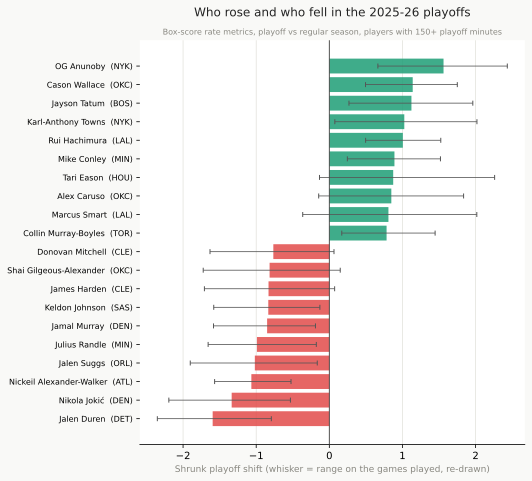
Putting the two halves together: who delivered the most value once the playoffs are weighted in. The riser-and-faller read says who changed, not who held the most value across the whole season once the playoffs are weighted in. For that, blend each playoff player’s regular-season and playoff BPM into one number, counting each playoff minute 2 times as much as a regular-season minute. Call it Playoff-Weighted Value. Because it is built on BPM, which is validated against Basketball-Reference, it stays on a real scale: points per 100 possessions above an average player.
The top of that list is the expected company: Nikola Jokić, Victor Wembanyama, and Shai Gilgeous-Alexander. Brunson is the interesting case, and the one this report started from: did he really jump from the regular season to the playoffs, and does any metric catch it? Yes, and the size is honest. His BPM rose from +3.4 in the regular season to +4.6 in the playoffs, a real step up. Weighted only by minutes, that leaves him 15th of the 103 playoff players; lean on the postseason and he climbs to 7th; lean on it harder still and he holds at 7th, never quite breaking the top five. The straightforward reading is a real top-ten playoff performer who got better when it counted, not a hidden top-five star the regular-season numbers were missing: the players ahead of him were either better all-around or rose more.
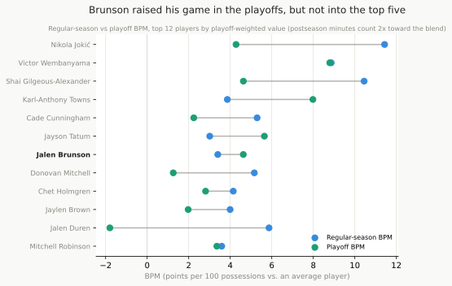
9. What changed from 2024-25 to 2025-26
The whole cross-system comparison rests on one season, so it is fair to ask how much of it survives when the season turns over. The top barely moves, the middle churns, and the systems disagree by about the same amount as before.
Across the 290 players who qualified in both seasons, the consensus order agrees from 2024-25 to 2025-26 at about 0.75 on a 0-to-1 scale: a steady spine with a moving body. Nikola Jokić and Shai Gilgeous-Alexander hold the top two spots in both seasons, Victor Wembanyama holds his as well, and Luka Dončić keeps a place too, so 4 of the top five carry over; Giannis Antetokounmpo is the one new arrival.
The biggest one-year swings are exactly what a single season cannot tell apart from real change. Stephon Castle climbed the most on the common scale (+1.41) and Ivica Zubac fell the most (-1.58); injuries, role changes, and roster moves drive most of these, and the rating systems only record them. This is why the report treats the single-season orderings as a snapshot and rests its findings on the 30-season panels instead.
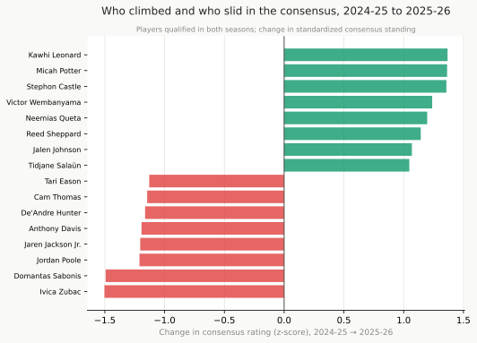
What did not change is how much the systems agree with one another: the mean rank agreement among the box-score systems was 0.71 in 2024-25 and 0.75 in 2025-26. The disagreement this report describes is built into how the metrics are made, not an accident of one season.
10. Summary
Do the systems agree? On the best handful of players, closely; below the top tier, less than their reputations suggest. The box-score systems move together but only moderately track the from-scratch RAPM, the one lineup-based impact metric measured here (agreeing with the box scores at about 0.37 on a 0-to-1 scale), which is the point of an impact metric; after a reconstruction bug was fixed that low agreement is now real independent signal, and the prior-informed RAPM+prior, not the raw version, is the one that feeds the consensus. No system is best at everything: in a typical season PER describes a finished season better than any other (about 68% of the gaps between teams) yet forecasts the next among the worst (about 10%), a split that holds across all 30 seasons tested.
What does each system uniquely capture? It depends on the system. Each tilts toward a player type, Win Shares toward efficient bigs on winning teams, PER toward high-usage scorers, the impact metrics toward off-ball and defensive value the box score misses. But how much each adds beyond the rest splits widely: the all-in-one box scores, PER and BPM among them, are nearly reconstructable from the other systems, while Win Shares per minute and the bare RAPM family hold the most of their own, and with the RAPM reconstruction bug fixed that lineup independence now reads as genuine signal rather than an artifact of noise.
How should they be combined? Into two ratings that answer different questions. A plain consensus averages every system; a wins-predictive blend weights each by how well it tracked team wins. They agree almost exactly (0.98 on a 0-to-1 scale) on the best players and part mainly on role players whose production did not turn into team wins.
One pattern runs under all three answers: value is top-heavy. The gap between the best player and the tenth dwarfs the gap from the tenth to the fiftieth, so a ranked list understates how much a single elite player is worth.
The cross-system comparison rests on the 2025-26 season alone, so its exact orderings are a snapshot; year to year the order holds at the top (Nikola Jokić and Shai Gilgeous-Alexander lead both seasons, rank agreement about 0.75) but churns below it, while the describe-versus-forecast and stability findings span 30 seasons and are the firmer results. The recomputed BPM and VORP are validated against Basketball-Reference (Section 11) and best read for rank; their very top is slightly compressed.
11. A note on the recomputed formulas
Four of the box-score systems here are recomputed from raw totals (PER, Win Shares, BPM, VORP) rather than copied from a published source, and getting that recompute right mattered: an earlier version of this report had a reserve grading as the league’s best player and VORP running thirty times too large. PER and Win Shares land in the expected range (PER averages 15, with Nikola Jokić in the low 30s) and are used as is. BPM and VORP needed real repair, and the fix is worth walking through.
The bug. The first recompute built BPM’s per-100 rates on each player’s own possessions instead of the team’s, which inflated the rates for low-minute and high-steal players. The symptoms: a reserve, John Konchar, graded as the league’s best player by BPM; VORP ran roughly thirty times too large, with a single-season leader near 250 where the real scale tops out under 10; and usage rate read close to 100% for a starter instead of the correct 30%. The numbers were not merely approximate: they were wrong in scale and in order.
The fix. BPM is now built in two steps. First, the standard advanced rates (usage, assist, turnover, rebound, steal, and block percentages, each computed against team and league context the way Basketball-Reference does) feed a model tuned to reproduce Basketball-Reference’s published offensive and defensive BPM. Second, each team’s ratings are anchored so its players, weighted by minutes, sum to the team’s actual point differential, which is the defining property of BPM and what sets the scale. VORP was rebuilt on the corrected BPM with the right minutes base.
The check. Against Basketball-Reference’s published 2025-26 figures, across 361 qualified players, the recomputed values now line up: a value agreement of 0.93 for BPM, 0.95 for offensive BPM, and 0.96 for VORP, on a 0-to-1 scale. Defensive BPM is weaker at 0.88, which is honest: box-score defense is hard, and Basketball-Reference’s own defensive BPM is limited for the same reason. Two caveats remain. The recompute slightly compresses the very top, grading the best player a notch below his Basketball-Reference mark. And the RAPM family had its own repair: a reconstruction bug was quietly discarding most of the season’s games, and the bare RAPM that survived was close to noise. With the bug fixed and the games restored, its reliability came back (Section 2), and RAPM+prior is now a usable impact metric; the bare single-season version remains the noisier of the two, and its absolute per-100 values are still approximate, so read the RAPM family for rank more than for exact scale.
12. Limitations
The cross-system comparison (rank agreement, the two combined ratings, the playoff risers and fallers) is built on the 2025-26 season alone. Two tests reach further, both across 30 seasons back to 1996-97: the describe-versus-forecast panel and the year-over-year stability of each rating. Extending the cross-system comparison itself across all those seasons, rather than the single testbed year, is the natural next step.
The crosswalk matching rate for each third-party source is reported in docs/player_rating_overview_results.md. Players who could not be matched are listed there; they are excluded from the cross-system comparison but retained in the unified table.
RAPM (regularized adjusted plus/minus) is the technical backbone of every serious modern impact metric (EPM, LEBRON, DARKO, RAPTOR, and RPM all build on it). This report now computes it directly from play-by-play, for 2025-26 and back through 1997-98. Within a season, every possession is reconstructed into the five-on-five lineup that was on the floor, and a single statistical model estimates all the players’ contributions to the scoring margin at once (582 players in 2025-26). One thing still makes the bare version weaker than the published metrics: it uses a single season of lineup data with no box-score prior, so it carries more noise than the pooled, prior-anchored version. Bare RAPM rates its leader (Section 2) well above where the box scores place him, and across the seasons it forecasts next-season team results less well than RAPM+prior does (Section 3). The bare version’s offensive and defensive halves are also kept out of the consensus, so one single-season split cannot swing the order at the top.
The report also computes the stabilized version, RAPM+prior. It pools three seasons of possessions, weighting recent ones more heavily, and shrinks each player toward a box-score prior: the offensive half toward Offensive BPM, the defensive half toward Defensive BPM. A player with few possessions stays near his box score, while a heavy-minute player moves toward what the lineup data shows. This is the prior-plus-RAPM recipe the published metrics use, and it helps where expected: its order agrees with the consensus at 0.91, up from 0.46 for the bare version, more than double the agreement. The gain shows at the top as well as in the overall order: RAPM+prior now leads with the MVP tier, Shai Gilgeous-Alexander at its head, rather than the low-minute names a raw one-season estimate can float up. Its absolute per-100 values are still an approximate in-house recompute, so read it for rank more than exact scale. RAPM+prior, combined only, is the version that feeds the consensus. It also forecasts team results well: across the seasons where it can be computed, RAPM+prior predicts next-season team point differential better than the box scores do (Section 3). The caveat that remains is at the player level, where heavy-minute role players who spend their court time in strong lineups, the hardest case for any plus/minus method, can still rate too high. Matching a published metric like EPM or LEBRON would need the player-tracking data they use and we do not have. A public RAPM snapshot can be dropped into the cache schema to validate the computed values when one is available.
The tracking-based and team-internal systems (Second Spectrum, franchise models, Synergy) are documented in the inventory but not accessible. The blind spot is acknowledged.
Comparing playoff performance to regular season performance is done for the box-score systems in Section 8, where the rate metrics are recomputed from postseason games and compared directly. The limit is the impact metrics: RAPM-based systems cannot do this reliably. A first-round exit provides roughly 6 games of lineup data; even a Finals run provides only 20 to 24 games. That sample is too small for the lineup-based estimate to stabilize, regardless of how good the prior is. The small-sample problem is not a solvable data-engineering issue; it is a fundamental limit of how RAPM works.
13. What weighing the evidence more carefully would add
The impact metrics already weigh evidence this way in one place: Section 1 described how the box-score prior and the lineup on/off data are blended, with the weight shifting toward the data as a player’s sample of possessions grows. That structure is the skeleton of EPM, LEBRON, DARKO, and every other serious impact metric.
Three things a more complete version would add:
Uncertainty ranges. Section 1 already noted what the single number hides: an “EPM: +8.2” carries no range, though the true uncertainty band around a one-season RAPM-based estimate is roughly 2-3 points per 100 possessions. This does not mean the metrics are unreliable. It means the precision they imply is a display choice, not a statistical one.
Playoff versus regular season. Section 8 already compares regular season and playoffs for the box-score rate metrics directly, which is the practical version. The addition is for the RAPM-based metrics, where the right approach is different: treat the full-season estimate as the starting belief and update it with playoff lineup data. The updated estimate barely shifts for a player who exits in the first round (roughly 6 games of new evidence), and moves more for a player who reaches the Finals (20-24 games). The shift (in which direction and by how much) is the honest answer to “did this player hold up in the playoffs?” without pretending there is more data than there is. A player whose estimate barely moves played to his regular-season picture; one whose estimate shifts meaningfully showed something the season had not.
Better consensus weighting. The wins-predictive rating in this report is a step toward what is sometimes called model averaging: instead of treating all systems as equally reliable, weight them by how well they predicted team wins. A more complete version would estimate those weights from retrodiction performance across multiple seasons and update them as new data arrives. The practical difference at the top of the rankings is small, because the systems that predict team wins best already carry the most weight. But the principled foundation matters when choosing which metrics to trust for a specific question, particularly for players at the margins of the top tier.
Appendix A: Companion Documents
Appendix B: The two versions of Box Plus/Minus
Box Plus/Minus comes in two versions, both built by Daniel Myers for Basketball-Reference. The original, BPM 1.0, was published in 2014 and was the first widely available attempt to estimate a player’s plus/minus impact from the box score alone. Basketball-Reference later replaced it with a revised version, BPM 2.0, and recomputed every season in its database with the new formula. The “BPM” throughout this report is BPM 2.0, the version in current use.
The two differ in method, not just in tuning. BPM 1.0 first guessed each player’s position (point guard through center) and offensive role from their stats, then applied weights that shifted with that position and role. BPM 2.0 reworked how it infers role and recalibrated its weights against a larger set of lineup plus/minus data, a revision meant to improve accuracy, particularly for players whose value comes from defense or from a role the box score describes poorly. Because 2.0 is the version Basketball-Reference now publishes, and the one its BPM and VORP figures reflect, it is the one this report recomputes.
We looked at adding BPM 1.0 alongside it, to show how much a single system’s verdicts move when only the formula changes, but did not. Basketball-Reference retired the original and no longer publishes its values, so there is nothing to import. And the position-and-role part of the formula is not cleanly documented in public sources: the reconstructions that circulate drop it, which collapses the metric into something close to a minutes-played ranking rather than a measure of skill. A faithful recompute would need the original full specification. If that becomes available, BPM 1.0 versus 2.0 is a natural addition.
Data: NBA.com via nba_api, Basketball-Reference, FiveThirtyEight (RAPTOR). See Appendix A for companion documents.